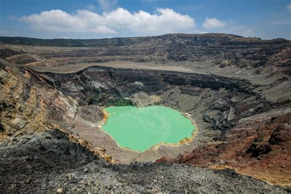

MAPA DE SANTA ANA
Información
Santa Ana es uno de los departamentos más importantes de El Salvador, conocido como "La Ciudad Morena". Tiene una extensión de 2,023 km² y una población aproximada de 613,000 habitantes. Es famoso por su cultura, historia y arquitectura.
Datos Históricos
Santa Ana fue fundada en 1569 y ha jugado un papel importante en la historia del país, especialmente en el desarrollo económico gracias a la producción de café. La ciudad fue testigo de importantes eventos durante la época colonial y la república.
Lista de Municipios
- Candelaria de la Frontera
- Chalchuapa
- Coatepeque
- El Congo
- El Porvenir
- Masahuat
- Metapán
- San Antonio Pajonal
- San Sebastián Salitrillo
- Santa Ana (cabecera)
- Santa Rosa Guachipilín
- Santiago de la Frontera
- Texistepeque
Centros Turísticos
Entre los principales atractivos turísticos destacan el Parque Nacional Cerro Verde, las Ruinas de Tazumal en Chalchuapa, y el centro histórico de la ciudad de Santa Ana.
Lagos
El lago de Coatepeque es uno de los principales atractivos naturales, considerado uno de los lagos más hermosos de El Salvador.

Ríos
Santa Ana es atravesada por varios ríos, entre ellos el río Lempa y el río Guajoyo, importantes para la agricultura y la generación de energía hidroeléctrica.

Volcanes
El Volcán de Santa Ana o Ilamatepec es uno de los más altos del país y ofrece vistas espectaculares desde su cráter. Es muy visitado por turistas y montañistas.
Personajes Célebres
Entre los personajes destacados de Santa Ana se encuentra el poeta David Escobar Galindo y otros artistas que han dejado huella en la cultura salvadoreña.